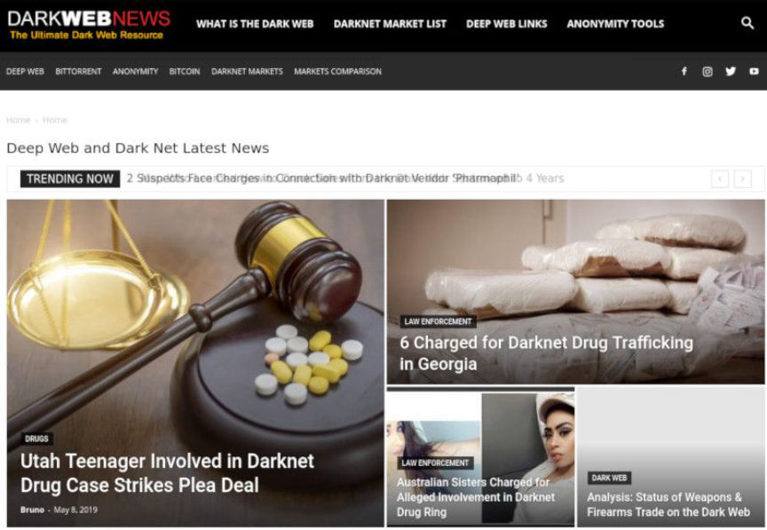
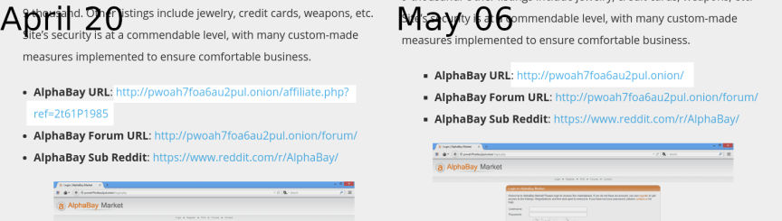
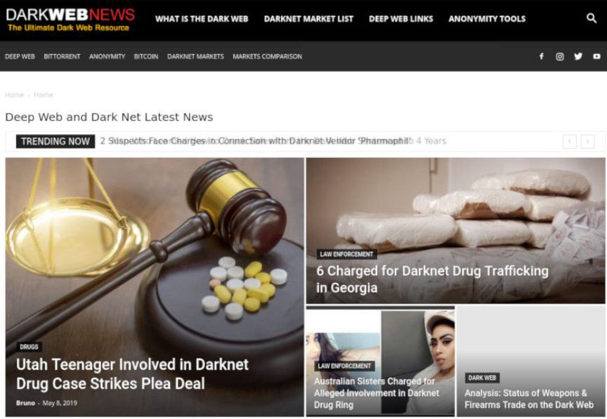
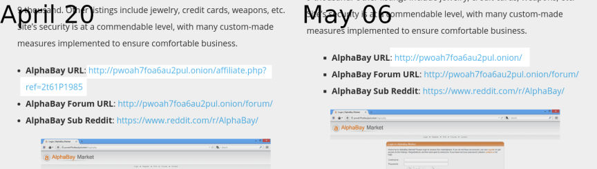

Another Darkweb News Site Bites the Dust
~1 min read | Published on 2019-05-09, tagged DarkWeb, General-News using 166 words.
For reasons unknown but possibly related to the recent DeepDotWeb shutdown, another darkweb news website ended operations on May 9, 2019. They gave no explanation as to why they shut down.
Darkwebnews.com, a relatively popular site for darkweb news and marketplace links, shutdown on May 9, 2019. The site, until the DeepDotWeb bust, offered affiliate links to various marketplaces, including Alphabay, Dream, and Wallstreet Market.

Although law enforcement in the DeepDotWeb case primarily targeted DeepDotWeb for earning so-called “kickbacks” for linking to marketplaces, they also highlighted how DeepDotWeb had facilitated the use of darkweb markets for illegal purposes. The same logic would apply to the operators of darkwebnews.com, even if law enforcement had no involvement with the site’s shutdown.

Although this site does not use affiliate links, it does link to marketplaces, forums, and other darkweb resources. There is no “for educational use” disclaimer; the links are listed for both historical purposes and for verification purposes. No money has been earned through the operation of darknetlive.com.
Darkwebnews.com, a relatively popular site for darkweb news and marketplace links, shutdown on May 9, 2019. The site, until the DeepDotWeb bust, offered affiliate links to various marketplaces, including Alphabay, Dream, and Wallstreet Market.

Darkwebnews.com Homepage
Although law enforcement in the DeepDotWeb case primarily targeted DeepDotWeb for earning so-called “kickbacks” for linking to marketplaces, they also highlighted how DeepDotWeb had facilitated the use of darkweb markets for illegal purposes. The same logic would apply to the operators of darkwebnews.com, even if law enforcement had no involvement with the site’s shutdown.

Darkwebnews.com Referral Links
Although this site does not use affiliate links, it does link to marketplaces, forums, and other darkweb resources. There is no “for educational use” disclaimer; the links are listed for both historical purposes and for verification purposes. No money has been earned through the operation of darknetlive.com.